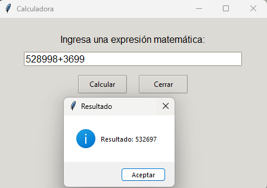
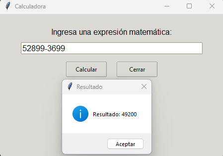
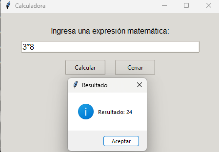
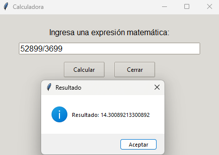

Capturas de Pantalla

Interfaz principal con menú de opciones.

Ejemplo de una suma compleja procesada correctamente.

Ejemplo de una resta compleja procesada correctamente.

Ejemplo de una multiplicación compleja procesada correctamente.

Ejemplo de una división compleja procesada correctamente.